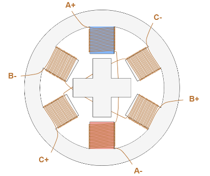
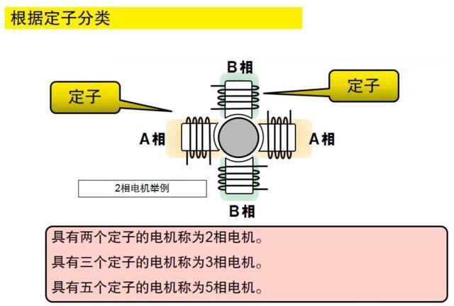
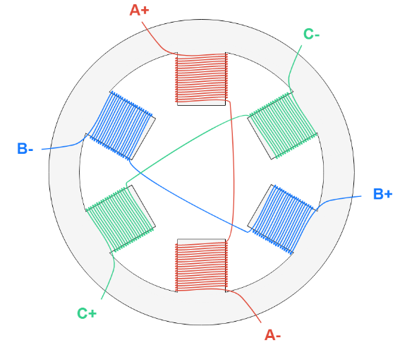
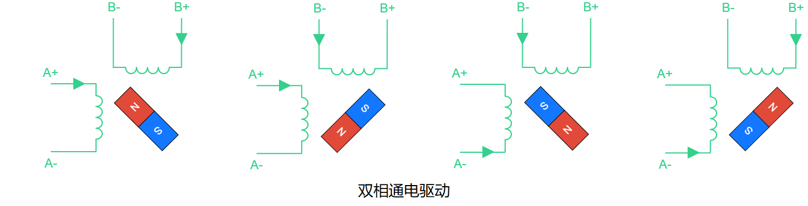
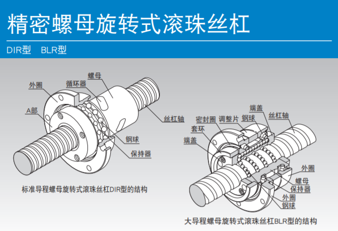
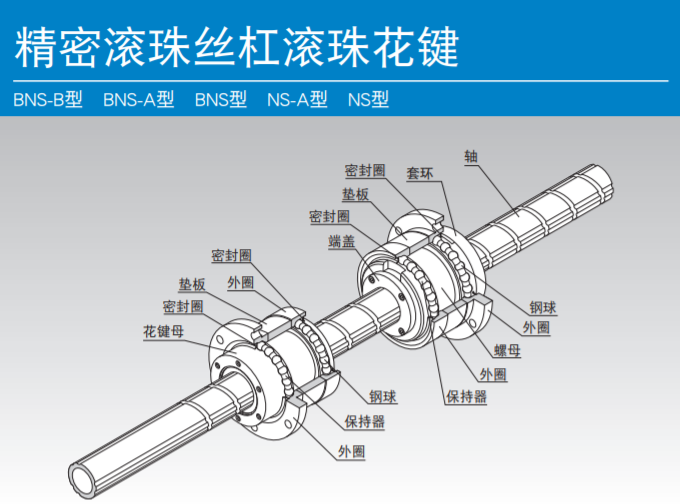

# 步进电机
# 介绍
步进电机（英语：Stepper motor、Step motor）是直流无刷电机的一种，为具有如齿轮状突起（小齿）相锲合的定子和转子，可借由切换流向定子线圈中的电流，以一定角度逐步转动的电动机，能将电脉冲信号转换成相应角位移或线位移。
# A、构造上
步进电机在构造上有三种主要类型：反应式（Variable Reluctance, VR）、永磁式（Permanent Magnet, PM）和混合式（Hybrid Stepping, HS）

反应式：也叫感应式、磁滞式或磁阻式步进电机。定子上有绕组、转子由软磁材料组成；定、转子周边均匀分布小齿和槽，通电后利用磁导的变化产生转矩。结构简单、成本低、步距角小，可达 1.2°、但动态性能差、效率低、发热大，可靠性难保证。

永磁式：永磁式步进电机的转子用永磁材料制成，转子的极数与定子的极数相同。其特点是动态性能好、输出力矩大，但这种电机精度差，步矩角大（一般为 7.5° 或 15°）。

混合式：也叫永磁反应式、永磁感应式步进电机，综合了反应式和永磁式的优点。其定子上有多相绕组、转子上采用永磁材料，转子和定子上均有多个小齿以提高步矩精度。其特点是输出力矩大、动态性能好，步距角小，但结构复杂、成本相对较高。


结构区别：

# B、相数上
从定子上绕组来分类，共有二相、三相和五相等系列。目前最受欢迎的是两相混合式步进电机，约占 97% 以上的市场份额，其原因是性价比高，配上细分驱动器后效果良好。

两相：

三相：


# C、极数上
按照接线方式的不同，步进电机又可以分为单极步进电机（Unipolar Stepper Motor），和双极步进电机（Bipolar Stepper Motor）。

单极型：采用电流在一个绕组中始终沿固定方向流动的驱动方式（单极驱动）。虽然步进电机的结构较为复杂，但是由于仅需要电流 ON /OFF 的控制，因此步进电机的驱动电路较简单。

双极型：采用电流在一个绕组中双向流动的驱动方式（双极驱动）。这种方式电机的结构比较简单，端子数也较少，但由于必须控制一个端子的极性，因此驱动电路较为复杂。


单极跟双极比较：
・双极连接
－采用电流在一个绕组中双向流动的驱动方式（双极驱动）。
－结构简单，但步进电机的驱动电路复杂。
－绕组利用率好，且可以进行精细的控制，因此步进电机能够获得很高的输出转矩。
－可以减小在线圈中产生的反电动势，因此可以使用耐压低的电机驱动器。
・单极连接
－具有中心抽头，采用电流在一个绕组中始终沿固定方向流动的驱动方式（单极驱动）。
－结构复杂，但步进电机的驱动电路简单。
－绕组利用率差，与双极连接相比，步进电机只能获得约一半的输出转矩。
－由于会在线圈中产生较高的反电动势，因此需要使用高耐压的电机驱动器。
# 步进模式
主要有 3 种步进模式 ：
- 整步
- 半步
- 微步
# A、整步

顾名思义，就是每走一步都是取整的意思。而在整步控制上，也可分成单相通电驱动和双相通电驱动：


它们之间最大的区别在于，双相通电驱动下，由于电机中流动的电流更多，产生的磁场也更强，因此扭矩也更大。
# B、半步

半步模式属于单相通电驱动和双相通电驱动的组合，这种模式可以将步距减小一倍（旋转 45°，而不是 90°）。其唯一的缺点是电机产生的扭矩不是恒定的，当两相都通电时扭矩较高，只有一相通电时扭矩较小。

# C、微步

在微步模式下，可以看作是半步模式的增强版，因为它可以进一步减小步距，并且具有恒定的扭矩输出。这是通过控制每相流过的电流强度来实现的。最多可将电机步距角细分 256 倍，提高了低速光滑度和低速谐振效果。

# 运作方式
步进电机的运行一般分为三个部分：
- 控制器
- 驱动器
- 电机马达

# A、控制器
控制器类似于人的大脑，指引着电机转动的方向以及操控着电机运转的快慢；当配合着一些控制策略，如：PID 控制、自适应控制等等，会使得其运作效果相当出色；而对于常见的控制方式有：传统方式的步进电机控制系统、基于 PLC 的步进电机控制系统、基于 DSP 的步进电机控制系统、基于 ARM 的步进电机控制系统等。
# B、驱动器
驱动器一般作两个功能：电机的精度控制和驱动运转控制。可分为恒流驱动与恒压驱动两种；恒压驱动方式因其电路构造简单，在高速领域时不易获得转矩的特性，现今已经很少使用；然而恒流驱动方式则是现在广为使用的驱动方式，在高速领域中能掌 握优良的转矩特性。
常见的驱动电路有：
单极步进电机驱动电路

双极步进电机驱动电路


# C、电机马达

略
<br>
# 滚珠丝杆
# 种类


# 型号






# 传动装置
# 通电自锁
绕组通电时步进电机具有全部的保持力矩。这就意味着步进电机可以在不使用机械刹车的情况下保持在停止位置。

# 刹车抱闸
一旦电源被切断，电机自身的保持力矩丢失，电机不能在垂直操作中或施加外力作用下保持在停止位置。在提升和其它相似应用中需要使用带电磁刹车的电机。

<br>
# 常用知识归纳
# 细分与步进数
# A、定义
什么是步进数
步进数，也叫脉冲数，是指步进电机转动一圈或是前进一段距离，需要电机需要接受的信号个数，单位为步。 因为电机的转动最终还是转化为直线运动，所以通常步进数指的是电机推动、拉动主轴，龙门等配件前进 1 毫米所需要的步数。
当步进数不对的后果：
例如当一台雕刻机的电机步进数不对，直接影响雕刻出来的结果大小不对。比如步进为 100 的机器，雕刻 1 毫米的直线，电机需要的信号是 100，如果设置步进数为 200，那就多走了一倍的距离，实际雕刻出来的线条就为 2 毫米了。
什么是细分
细分是步进电机驱动器的功能。步进电机的精度有限，一般的步进电机为 200 步走一圈，走一步转动的角度是 1.8 度。当我们需要电机走 0.9 度时，电机就没有办法了。好在步进电机驱动器，可以帮助步进电机把精度提高，把精度提高一倍，叫做半步细分，也叫 1/2 细分，此时电机一个信号脉冲就可以转动 0.9 度。再把精度提高一倍，叫 1/4 细分，走一步，相当于 0.45 度。细分都是一倍倍上去的，有 1/2, 1/4, 1/8, 1/16, 1/32 等，最大可达 256 细分。
# B、应用
步进数计算三要素
一个是电机转动一圈所需的脉冲数（原始步数）。这个一般为 200，对应的步进角为 1.8 度；当然也有其他的，像一些小电机只有 15 度，那么转一圈只需 24 个脉冲。
二是所采用的传动结构。如果用丝杆，要知道丝杆的导程，就是说丝杆转一圈时，前进的毫米数（这个稍后说）。如果是皮带轮，就要知道齿数和齿距，两个相乘得到皮带轮转一圈，皮带前进的毫米数。
三是步进电机驱动器的细分数。计算的公式是： 原始脉冲数 除于 毫米数 再乘于 细分数。
合理的步进数
步进数越大，理论上来说精度越高；然在实际应用中，精度是由很多因素决定的，比如说齿轮可能有间隙，皮带有弹性，机架会抖动等。因此小于 0.01 精度的步进数是大部分是没有意义的。
如何纠正步进参数
有些不是我们自己购买的机器，我们可能不知道具体的电机，传动参数，那么还有一种调整的办法。 先随便设置一个步进数，如 200，然后在软件上控制电机走 100 毫米，如果设置对，实际走的距离就是 100 毫米，如果不对，那么有偏差，比如实际它只走了 80 毫米。那么可以用以下方式计算正确的步进数。
原理： 正确的步进数跟正确的距离之比 = 错误的步进数跟错误的距离之比
公式：正确的步进数 = 正确的距离 乘于 错误的步进数 除于 错误的距离 = 100 * 200 / 80= 250 设置步进数为 250 后，你会发现，走 100mm，就是 100mm，校对成功。
# 丝杆脉冲计算
- 首先认识丝杆的导程，一般来说常见的有 1205、1210、1605、1610 等这些说法，然后前两位是直径，后两位表示导程，导程 05 的丝杆就是每两个丝的间距为 5（单位：mm）。
- 以常规的步进电机 1.8 度 200 步进，那么走一圈就是 200 * 1.8 = 360 度
- 假设驱动器是 8 细分，那就是把 1.8 度再分成 8 份；所以经过驱动器的电机每一步进就是 1.8 度 / 8 = 0.225 度；最终在 8 细分下每转一圈就是 200 * 8 = 1600 步进。
- 当导程为 5 的丝杠，则每转一圈走 5 毫米，每一步进就是 5 / 1600 = 0.003125 毫米，这就是电机参数。如果是导程为 3 的参数，那就是 0.001875 毫米，以次类推。
- 用 1 除以电机参数就是脉冲当量，例如: 1 / 0.003125 = 320 步进，就是每走 1 毫米需要多少步进。
# 常规公式
$ 步进电机运行步数 = 运行位移 / 导程 * 360 / 步距角 * 细分数 $
这是用步进电机接丝杆做驱动时用的，就是计算步进数的式子：各个变量如下：
- 步进电机运行步进数 —— 这是你要计算的（也可以说是脉冲的数量），
- 运行位移 / 导程 —— 这是位移和导程的关系，这个除出来，就是移动这一段距离螺杆需要转几圈。
- 360 / 步距角 —— 因为正常步进电机是一个脉冲转一个步距角，这个算出来就是多少步电机转一圈。例如：步距角 = 7.5 度，这样算出来是 48，这就是 48 步就走一圈。
- 细分数 —— 一般情况这个数值是 1，但是采用了细分的方式驱动，可以控制电机一步只转半个步距角，这时细分数就为 2。合在上面式子里就会算出 96 步转一圈。
- 最后将 2、3、4 相乘。
# 参考：
步进电机驱动器简介（上）—— 步进电机的特点、分类和工作原理
步进电机驱动器简介（下）—— 步进电机的控制驱动和安全技术
步进电机基础知识：类型、用途和工作原理